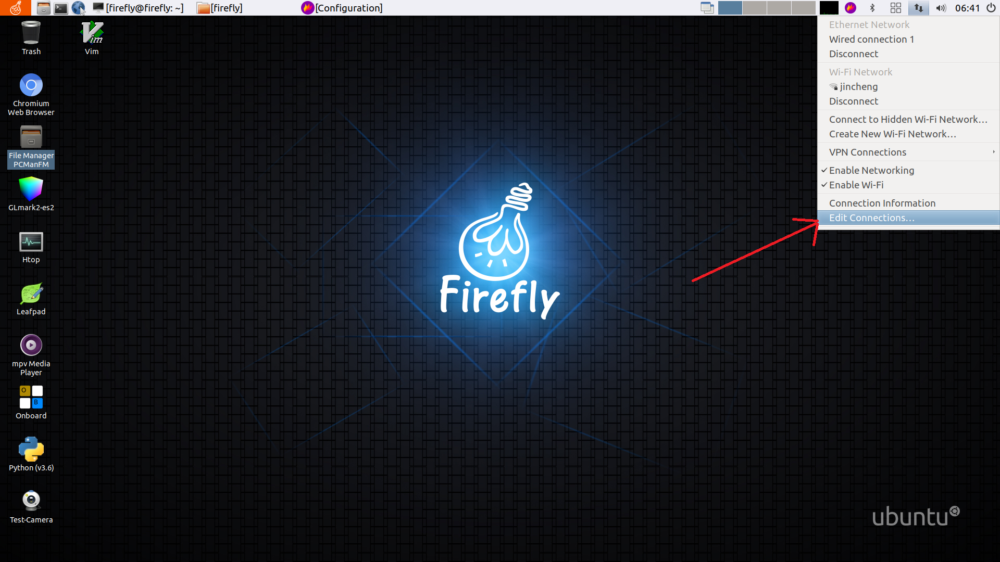
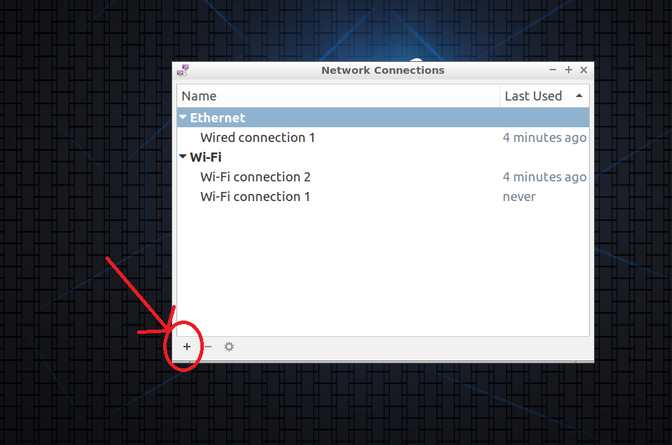
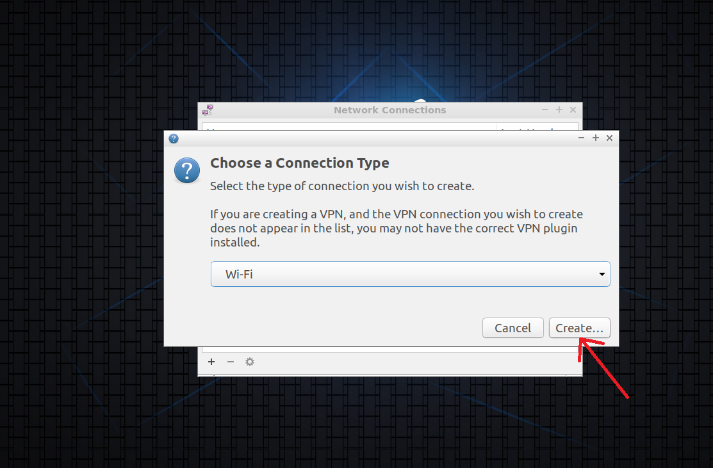
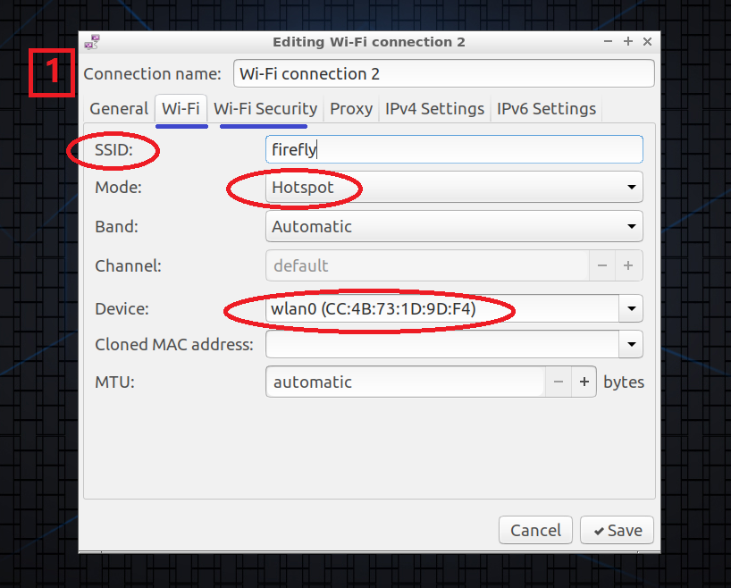
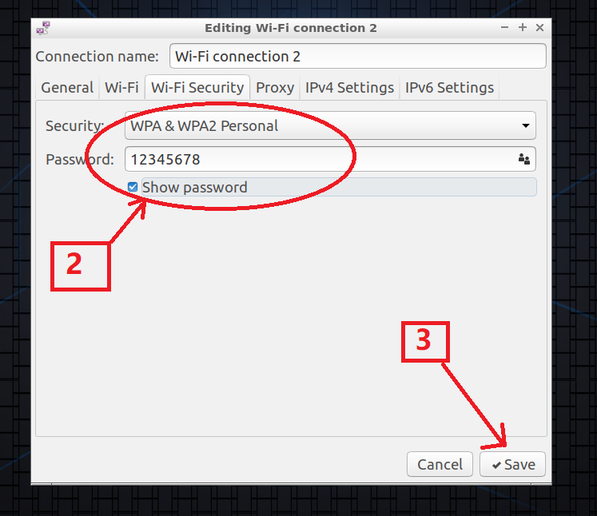
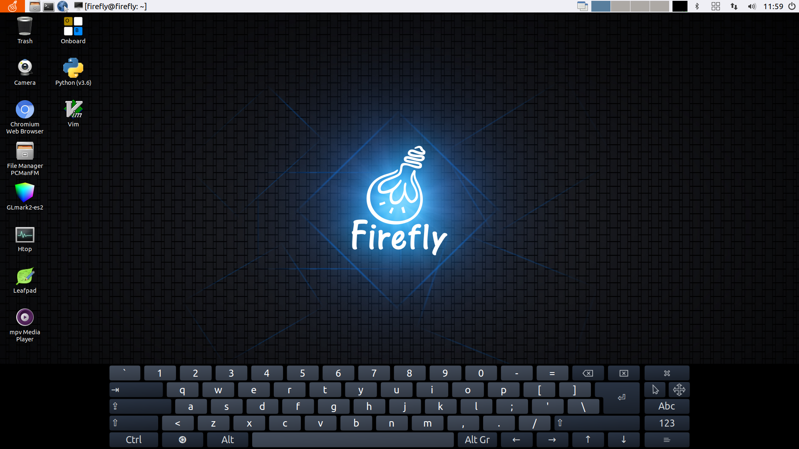
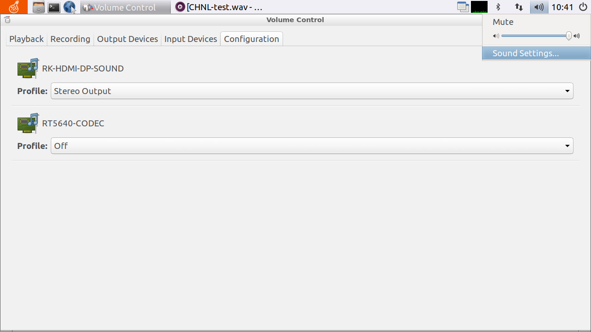
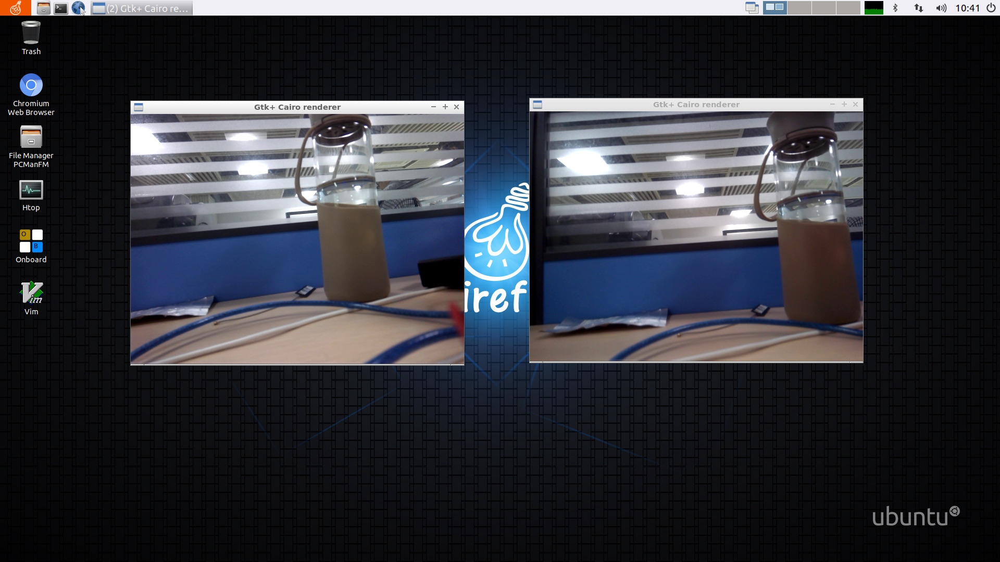

Firefly Ubuntu User Manual¶
This user manual is applicable to Firefly Ubuntu Desktop & Minimal system. Some introductions related to UI display are only for Desktop system.
It is strongly recommended to use Ubuntu 18.04. If you use other versions of the system, some sections of this document may not be fully applicable.
ADB use¶
ADB¶
ROC-RK3399-PC Pro use Type-C data cable to connect the device and the PC host;
adb devices
adb shell
Network ADB¶
Check the IP address of the development board, the PC end is accessed through the network:
adb connect + IP
adb shell
Install linux-headers and linux-image¶
DEBIAN package download link: Downloads
Install header files
sudo dpkg -i linux-headers-4.4.194+_4.4.194+-5_arm64.deb
sudo dpkg -i linux-image-4.4.194+_4.4.194+-5_arm64.deb
cd /usr/src/linux-headers-4.4.194+
make headers_check
make headers_install
#make scripts It might go wrong but it doesn't matter
make scripts
Qt cross compilation environment support¶
The Qt cross-compilation tool chain released by Firefly is suitable for the following environments:
Host: x86-64 / Ubuntu 18.04
Target: Firefly RK3399 RK3328 PX30 / Ubuntu 18.04 Minimal&Desktop
The tool chain fully supports wenEngine and backends such as EGLFS LinuxFB XCB.
download link
Link: https://drive.google.com/drive/folders/1sQdnuZe2onTxvguUUV0LeVsOGWXb-d_q?usp=sharing
Deployment
See Qt5.12.2_Release.md for details Note that the names of all paths in the document cannot be changed, otherwise it will cause compilation or running errors.
Compile
On the host side, enter the Qt project directory, qmake && make.
Run
Two test demos are provided in the tool chain, corresponding to EGLFS and LinuxFB Backend. After the deployment is completed, the user can build the demo on the host side and run the demo on the tartget side to test whether the deployment is successful.
Change the device boot and desktop LOGO¶
Boot up LOGO The boot logo is stored in the SDK/kernel. After modification, recompile the kernel.
linux-sdk/kenel/logo.bmp
LOGO on the desktop After the replacement, restart the system.
/usr/share/lubuntu/
├── images
│ └── lubuntu-ff-logo.png #Small icon in the upper left corner of the desktop
└── wallpapers
└── firefly-default-wallpaper.png #desktop wallpaper
Create WIFI hotspot¶
Hardware requirements:
Requires wireless network card and supports mobile hotspot function
Click the Ethernet Network icon in the upper right corner of the desktop, select Edit Connection...

Select the + icon, Add a new connection

Select Wi-Fi, then click Create

Wi-Fi settings:
Set SSID
Mode: select Hotspot
Device: select wireless network card (wlan) 
Choose the appropriate encryption method: 
Click Save to complete the hotspot creation immediately
Set static IP (using netplan)¶
Set static IP with netplan
addresses
gateway4
nameservers： DNS nameservers
ethernets
wifis
root@firefly:~# vim /etc/netplan/netplan.yaml
root@firefly:~# netplan apply
The contents of netplan are as follows:
network:
ethernets:
eth0:
addresses: [168.168.4.3/24]
gateway4: 168.168.0.1
dhcp4: yes
optional: true
wifis:
wlan0:
addresses: [168.168.4.23/24]
gateway4: 168.168.0.1
dhcp4: yes
dhcp6: no
access-points:
"ssid":
password: "password"
version: 2
or
network:
ethernets:
eth0:
addresses: [168.168.4.3/24]
gateway4: 168.168.0.1
dhcp4: no
optional: true
nameservers:
addresses: [202.96.128.166]
wifis:
wlan0:
addresses: [168.168.4.23/24]
gateway4: 168.168.0.1
dhcp4: no
dhcp6: no
access-points:
"ssid":
password: "password"
version: 2
More configuration examples for netplan: https://netplan.io/examples
USB Ethernet¶
USB Ethernet, the main realization is to use the OTG interface of the device as a peripheral mode and simulate it as a network interface, and then the host connects to the device via USB and accesses the Internet through the device. The following is the specific operation based on Firefly-RK3399 device.
Operating environment:
PC with Ubuntu system
Firefly-RK3399 device
Kernel Settings¶
In the kernel directory, open the kernel configuration options menu:
make firefly_linux_defconfig
make menuconfig
After entering the kernel configuration menu, select in turn: Device Drivers -> USB Support -> USB Gadget Support.
Set the USB Gadget Driver to compile into a module, and then you can find the option of Ethernet Gadget (with CDC Ethernet support) below, and choose to compile into a module as well. At the same time, select RNDIS support.
<M> USB Gadget Drivers
<M> USB functions configurable through configfs
<M> Ethernet Gadget (with CDC Ethernet support)
[*] RNDIS support (NEW)
Then compile the kernel in the kernel directory:
make rk3399-firefly.img -j12
After the compilation is completed, burn the kernel to the device. For the burn process, please refer to the partition image burning part in the Wiki tutorial: Upgrade Firmware. Then copy the following modules generated in the kernel directory to the device:
drivers/usb/gadget/function/u_ether.ko
drivers/usb/gadget/function/usb_f_ecm_subset.ko
drivers/usb/gadget/function/usb_f_ecm.ko
drivers/usb/gadget/function/usb_f_rndis.ko
drivers/usb/gadget/function/usb_f_eem.ko
drivers/usb/gadget/legacy/g_ether.ko
drivers/usb/gadget/libcomposite.ko
Then on the device, load the above modules in sequence:
insmod libcomposite.ko
insmod u_ether.ko
insmod usb_f_ecm_subset.ko
insmod usb_f_rndis.ko
insmod usb_f_ecm.ko
insmod usb_f_eem.ko
insmod g_ether.ko
Note: You must load libcomposite.ko and u_ether.ko first, and then the following modules can be loaded.
IP address settings¶
Connect the PC and the OTG interface of the device with a data cable, and execute the lsusb command in the PC to view the USB Ethernet device, which means the connection is successful.
firefly@Desktop:~$ lsusb
Bus 002 Device 003: ID 09da:5814 A4Tech Co., Ltd.
Bus 002 Device 002: ID 8087:0024 Intel Corp. Integrated Rate Matching Hub
Bus 002 Device 001: ID 1d6b:0002 Linux Foundation 2.0 root hub
Bus 001 Device 005: ID 04f2:b2ea Chicony Electronics Co., Ltd Integrated Camera [ThinkPad]
Bus 001 Device 004: ID 0a5c:21e6 Broadcom Corp. BCM20702 Bluetooth 4.0 [ThinkPad]
Bus 001 Device 003: ID 147e:1002 Upek Biometric Touchchip/Touchstrip Fingerprint Sensor
Bus 001 Device 002: ID 8087:0024 Intel Corp. Integrated Rate Matching Hub
Bus 001 Device 001: ID 1d6b:0002 Linux Foundation 2.0 root hub
Bus 004 Device 001: ID 1d6b:0003 Linux Foundation 3.0 root hub
Bus 003 Device 003: ID 0525:a4a2 Netchip Technology, Inc. Linux-USB Ethernet/RNDIS Gadget
Bus 003 Device 001: ID 1d6b:0002 Linux Foundation 2.0 root hub
ID 0525:a4a2 Netchip Technology, Inc. Linux-USB Ethernet/RNDIS Gadget in the output information is the USB network card device.
The device is plugged into the network cable so that the device can connect to the external network.
IP settings in the device:
Enter and execute the ifconfig -a command, you can see the following information:
root@firefly:~# ifconfig -a
# eth0 is the wired network card
eth0: flags=4163<UP,BROADCAST,RUNNING,MULTICAST> mtu 1500
inet 168.168.100.48 netmask 255.255.0.0 broadcast 168.168.255.255
inet6 fe80::1351:ae2f:442e:e436 prefixlen 64 scopeid 0x20<link>
ether 8a:4f:c3:77:94:ac txqueuelen 1000 (Ethernet)
RX packets 9759 bytes 897943 (897.9 KB)
RX errors 0 dropped 0 overruns 0 frame 0
TX packets 236 bytes 35172 (35.1 KB)
TX errors 0 dropped 0 overruns 0 carrier 0 collisions 0
device interrupt 42 base 0x8000
...
# usb0 is a virtual usb network card
usb0: flags=4098<BROADCAST,MULTICAST> mtu 1500
ether 4a:81:b1:34:d2:ad txqueuelen 1000 (Ethernet)
RX packets 0 bytes 0 (0.0 B)
RX errors 0 dropped 0 overruns 0 frame 0
TX packets 0 bytes 0 (0.0 B)
TX errors 0 dropped 0 overruns 0 carrier 0 collisions 0
Then customize an appropriate IP for the usb0 network card:
Note that the IP of usb0 and the IP of wired network card eth0 are not in the same network segment! !
ifconfig usb0 192.168.1.101
IP setting in PC:
# First check the USB virtual network card
firefly@Desktop:~$ ifconfig
enp0s20u2i1: flags=4163<UP,BROADCAST,RUNNING,MULTICAST> mtu 1500
inet 192.168.2.90 netmask 255.255.255.0 broadcast 192.168.2.255
inet6 fe80::871c:b87e:1327:7fd4 prefixlen 64 scopeid 0x20<link>
ether 46:fe:6e:97:ee:a6 txqueuelen 1000 (Ethernet)
RX packets 0 bytes 0 (0.0 B)
RX errors 0 dropped 0 overruns 0 frame 0
TX packets 1 bytes 54 (54.0 B)
TX errors 0 dropped 0 overruns 0 carrier 0 collisions 0
...
# Set the USB network card's IP address and the device's usb0 IP address in the same network segment
firefly@Desktop:~$ sudo ifconfig enp0s20u2i1 192.168.1.100
#Set the default gateway: it should be set to the ip address of the device usb0, because the traffic will be forwarded through usb0 later
firefly@Desktop:~$ sudo route add default gw 192.168.1.101
After setting the IP of the device and the PC, they can ping each other, and the PC can also use the ssh command to log in to the device.
Network sharing to realize PC Internet access¶
On the device: First turn on the IPv4 forwarding function:
echo 1> /proc/sys/net/ipv4/ip_forward
If you want to automatically turn on the forwarding function every time you restart the device, please directly modify the value of net.ipv4.ip_forward in the /etc/sysctl.conf file to 1. After modifying the file parameters, execute the sysctl -p command to reload the /etc/sysctl.conf file to make the IPv4 forwarding function effective.
Add rules for traffic forwarding:
iptables -t nat -A POSTROUTING -s 192.168.1.0/24 -o eth0 -j SNAT --to-source 168.168.100.48
Now the host PC can access the network. If the PC can ping the usb0 and eth0 of the device, but cannot access the Internet, you need to modify the DNS of the PC and add the following in /etc/resolv.conf:
nameserver 8.8.8.8
nameserver 8.8.4.4
Pay attention to the following points during the configuration process:
Correspond to each IP address on your device in the above steps, and note that the USB virtual network card IP and wired network IP on the device are not in the same network segment;
The gateway of the PC virtual USB network card should be set to the IP address of the device virtual USB network card;
The virtual network card IP address, IP forwarding function, traffic forwarding rules and other settings on the device will be restored after the device is restarted. The user can find out the information on how to automatically set these configurations after booting.
Export device system¶
This chapter applies to: When the user has completed the deployment of the work environment on one device, the current environment needs to be completely exported for batch deployment to other devices on the same platform.Users can also backup the current development environment by exporting the device file system.
Screen rotation¶
Firefly Ubuntu Desktop uses the ff_rotate script to control screen rotation:
ff_rotate
root@firefly:~# ff_rotate
rotate screen and touchscreen
run as root
ff_rotate <orientation>
orientation: left, right, normal, inverted
#Image output flip
root@firefly:~# ff_rotate inverted
Display version information¶
ffgo
The ffgo command provided by Firefly can easily view the firmware information, which is convenient for developers to debug and locate problems.
When users need to feedback information to Firefly, they need to attach the version information displayed by ffgo version.
root@firefly:~# ffgo
Usage:
ffgo: show this usage
ffgo update: update ffgo
ffgo version: get version
ffgo cmdlist: get support cmd list
ffgo [cmd]: run cmd in cmd list
root@firefly:~# ffgo update
update success
root@firefly:~# ffgo version
OS: Ubuntu 18.04.4 LTS
MODEL: Firefly-RK3399 Board (Linux Opensource)
FIREFLY: v2.03-1-g2ed565c
DATE: 20200617-1042
KERNEL: Linux version 4.4.194-59119-g968ba5005831 (jincheng@jincheng-System-Product-Name) (local/firefly-linux/rk3399/firefly: 968ba5005831c5f69d68d95984451fd2a7c457c0) (gcc version 6.3.1 20170404 (Lina0
reset¶
Firefly Ubuntu supports restoring factory settings. Note that this factory setting means that the device is restored to its initial state after the last firmware upgrade
root@firefly:~# recovery
Usage: update <option>
Options are:
ota | update [path]:
update firmware, if no path, use default path
"/userdata/update.img"
"/sdcard/update.img"
factory | reset:
reset to factory
Use recovery reset to restore to factory settings
Startup program¶
Firefly Ubuntu Desktop can use the following methods to set the boot-up program, but you need to pay attention to the operating permissions and current environment variables:
$vim /home/firefly/.config/lxsession/Lubuntu/autostart
@/bin/mkdir /home/firefly/ssddd
Each command starts with @, and the above example will create the /home/firefly/ssddd directory
Use root to log in to the system interface¶
autologin-user=root
root@firefly:~# cat /etc/lightdm/lightdm.conf.d/20-autologin.conf
[Seat:*]
user-session=Lubuntu
autologin-user=root
Video hardware codec support¶
The integrated VPU of RK3399 has excellent video codec capabilities. Mpp is a set of video codec APIs provided by Rockchip for VPU, and is based on mpp. Rockchip provides a set of gstreamer codec plug-ins. Users can do video codec applications based on gstreamer according to their needs, or directly call mpp to achieve hardware codec acceleration.
The system provides a test video file located at /usr/local/test.mp4, the test file is 1080P, 24Fps, H264 encoding, Mp4 format.
There are several ways to verify and develop video codec related applications.
Gstreamer¶
Under Ubuntu 16.04, gstreamer 1.12 has been installed in the /opt/ directory.
Under Ubuntu 18.04, gstreamer 1.12 has been installed in the system.
/usr/local/bin/h264dec.sh Test hardware H264 decoding.
/usr/local/bin/h264enc.sh Test hardware H264 encoding.
Users can refer to these two scripts to configure their own gstreamer application.
Mpv¶
The Mpv player provided by the system can directly call the rkmpp decoding plug-in.
FFmpeg¶
FFmpeg only supports hardware decoding through Mpp for Rockchip temporarily, and there is no hardware encoding support for the time being.
Firefly Ubuntu has installed FFmpeg, and users can use it directly.
-Confirm rkmpp decoder
$ ffmpeg -decoders | grep "rkmpp"
V..... h264_rkmpp h264 (rkmpp) (codec h264)
V..... hevc_rkmpp hevc (rkmpp) (codec hevc)
V..... vp8_rkmpp vp8 (rkmpp) (codec vp8)
V..... vp9_rkmpp vp9 (rkmpp) (codec vp9)
-Test commands
$ ffmpeg -y -c:v h264_rkmpp -i test.mp4 -an output.yuv
Special attention: FFmpeg h264_rkmpp decodes AV_PIX_FMT_DRM_PRIME, which is DRM frame data. If it is based on drm display, you can directly output the frame, otherwise, you need to use hwdownload to convert.
For more information, please refer to FFmpeg official website.
Mpp¶
Under Ubunut system, mpp related dev packages have been installed in the system.
For more related information, please refer to the relevant documents under
linux-sdk/docs/Linux/Multimedia
OpenGL-ES¶
RK3399 supports OpenGL ES1.1/2.0/3.0/3.1.
Firefly Ubuntu has provided complete OpenGL-ES support.
-Test commands
$ sudo test_glmark2_normal.sh
-webGL support
In the Chromium browser, type in the address bar: chrome://gpu to view the hardware acceleration support under Chromium.
Note:
EGL is an extension of OpenGL on the arm platform for the x window system, and its function is equivalent to the glx library under x86.
Because the Driver modesettings used by Xorg will load libglx.so by default (disabling glx will cause some applications that detect glx environment to fail to start), libglx.so will search for the dri implementation library in the system. However, rk3399 Xorg 2D acceleration is implemented directly based on DRM and does not implement the dri library, so during the startup process, libglx.so will report the following error.
(EE) AIGLX error: dlopen of /usr/lib/aarch64-linux-gnu/dri/rockchip_dri.so failed
This has no effect on the operation of the system and does not need to be processed.
Based on the same reasoning, some applications will report the following errors during the startup process, and there is no need to deal with them, which will not affect the operation of the application.
libGL error: unable to load driver: rockchip_dri.so libGL error: driver pointer missing libGL error: failed to load driver: rockchip
In some versions of Ubuntu software previously released by Firefly, the loading of libglx.so is disabled by default. In some cases, the following errors will occur when running certain applications:
GdkGLExt-WARNING **: Window system doesn't support OpenGL.The correction method is as follows:
Delete the following three lines of configuration in
/etc/X11/xorg.conf.d/20-modesetting.conf.Section "Module" Disable "glx" EndSection
OpenCL¶
Firefly Ubuntu has added opencl1.2 support, you can run the built-in clinfo of the system to get platform opencl related parameters.
firefly@firefly:~$ clinfo
Platform #0
Name: ARM Platform
Version: OpenCL 1.2 v1.r14p0-01rel0-git(966ed26).f44c85cb3d2ceb87e8be88e7592755c3
Device #0
Name: Mali-T860
Type: GPU
Version: OpenCL 1.2 v1.r14p0-01rel0-git(966ed26).f44c85cb3d2ceb87e8be88e7592755c3
Global memory size: 1 GB 935 MB 460 kB
Local memory size: 32 kB
Max work group size: 256
Max work item sizes: (256, 256, 256)
…
TensorFlow Lite¶
RK3399 supports the neural network GPU acceleration solution LinuxNN, and Firefly Ubuntu has added LinuxNN support.
Under opt/tensorflowbin/, run test.sh to test the Demo of the MobileNet model image classifier and the Target Detection Demo of the MobileNet-SSD model
firefly@firefly:/opt/tensorflowbin$ ./test.sh
Loaded model mobilenet_ssd.tflite
resolved reporter
nn version: 1.0.0
findAvailableDevices
filename:libarmnn-driver.so d_info:40432 d_reclen:40s
[D][ArmnnDriver]: Register Service: armnn (version: 1.0.0)!
first invoked time: 1919.17 ms
invoked
average time: 108.4 ms
validCount: 26
car @ (546, 501) (661, 586)
car @ (1, 549) (51, 618)
person @ (56, 501) (239, 854)
person @ (332, 530) (368, 627)
person @ (391, 541) (434, 652)
person @ (418, 477) (538, 767)
person @ (456, 487) (602, 764)
car @ (589, 523) (858, 687)
person @ (826, 463) (1034, 873)
bicycle @ (698, 644) (1128, 925)
write out.jpg succ!
On-screen keyboard¶
The official Ubuntu system comes with an on-screen keyboard, you can click to open it in the menu bar: 
HDMI_IN Image capture¶
This function can only be used on AIO-3399J board
Need to solder HDMI_IN input interface
Note for manual compilation:
This function is turned off by default, and the following operations need to be performed in the kernel warehouse:
git revert 8998afb927200ad42b27beacc22cf1e86bfca442Make sure this patch exists: firefly: AIO-3399J: enable HDMI-IN function: The HDMI-IN function is enabled, but other camera and audio functions may not be used normally.
Test script test_hdmiin-3399_new.sh
#!/bin/bash
export DISPLAY=:0
export XAUTHORITY=/home/firefly/.Xauthority
export PATH=/usr/local/sbin:/usr/local/bin:/usr/sbin:/usr/bin:/sbin:/bin:/usr/games:/usr/local/games:/snap/bin
export LD_LIBRARY_PATH=/usr/lib/gstreamer-1.0
WIDTH=1920
HEIGHT=1080
SINK=kmssink
#SINK=gtksink
echo autospawn = no > /home/firefly/.config/pulse/client.conf
pkill pulseaudio
sleep 1
amixer -c 1 sset 'IN1 Boost' 0
amixer -c 1 sset "RECMIXL BST1" on
amixer -c 1 sset "RECMIXR BST1" on
amixer -c 1 sset 'Mono ADC MIXR ADC1' on
amixer -c 1 sset 'Mono ADC MIXL ADC1' on
gst-launch-1.0 v4l2src device=/dev/video0 ! video/x-raw,format=NV12,width=${WIDTH},height=${HEIGHT}, framerate=30/1 ! videoconvert ! $SINK & # &>/dev/null &
GST_PID=$!
sleep 2
alsaloop -P hw:1,0 -C hw:1,0 -c 2 -t 500000 &
ALSA_PID=$!
trap '{ kill -9 $GST_PID; kill -9 $ALSA_PID; }' EXIT INT TERM
wait
Sound configuration¶
Equipment generally has 2 or more audio devices. The most common ones are the audio output of headphones and HDMI. The following is an example of audio settings for users’ reference.
Specify audio device from the command line¶
The audio files that come with the system are in the /usr/share/sound/alsa/ directory, please check the sound card device before playing:
root@firefly:~# aplay -l
**** List of PLAYBACK Hardware Devices ****
card 0: rockchiprt5640c [rockchip,rt5640-codec], device 0: ff890000.i2s-rt5640-aif1 rt5640-aif1-0 []
Subdevices: 1/1
Subdevice #0: subdevice #0
card 1: rkhdmidpsound [rk-hdmi-dp-sound], device 0: HDMI-DP multicodec-0 []
Subdevices: 1/1
Subdevice #0: subdevice #0
Then specify the sound card to play audio, where device 0 of sound card card0 corresponds to the headphone port, and device 0 of card1 corresponds to HDMI. The general audio playback command is aplay -Dhw:0,0 Fornt_Center.wav, but the audio file that comes with the system is mono, so in order to prevent playback failure, you can follow the following command to play:
#Select the headphone port to output audio files
root@firefly:/usr/share/sounds/alsa# aplay -Dplughw:0,0 Front_Center.wav
Playing WAVE'Front_Center.wav': Signed 16 bit Little Endian, Rate 48000 Hz, Mono
#Select HDMI output audio file
root@firefly:/usr/share/sounds/alsa# aplay -Dplughw:1,0 Front_Center.wav
Playing WAVE'Front_Center.wav': Signed 16 bit Little Endian, Rate 48000 Hz, Mono
Select audio device in the graphical interface¶
In the graphical interface, play the prepared audio file, then click the sound icon to open the Sound Setting, and select the Configuration. You can see two sound card devices, for example, set to HDMI output audio, then set the HDMI sound card device to Output, and set the other sound card to Off. (If the HDMI is silent or low, you can try to increase the volume by pressing the physical button on the HDMI screen)

Kernel configuration¶
In the kernel directory, open the kernel configuration options menu:
make firefly_linux_defconfig
make menuconfig
After entering the kernel configuration menu, select in turn: Device Drivers -> USB Support -> USB Gadget Support.
Select USB functions configurable through configfs in the USB Gadget Driver option.
At the same time, select Function filesystem (FunctionFS).
<*> USB Gadget Drivers (USB functions configurable through configfs) --->
USB functions configurable through configfs
[*] Function filesystem (FunctionFS)
Then compile the kernel in the kernel directory:
make rk3399-firefly.img -j12
After the compilation is completed, burn the kernel to the device. For the burn process, please refer to the partition image burning part in the Wiki tutorial: Upgrade Firmware.
ADB connection¶
After installing ADB, connect the device and PC with a Micro USB OTG cable. Then use the command adb devices to see if there is a device connected:
firefly@Desktop:~$ adb devices
List of devices attached
0123456789ABCDEF device
From the returned information, you can see that the device has been found, indicating that the device has been successfully connected.
After the device is successfully connected, enter the command adb shell to enter the command line mode:
firefly@Desktop:~$ adb shell
#
In this state, the current path of the command line cannot be seen, and the Tab key completion function is invalid. You need to enter a user to operate normally.
firefly@Desktop:~$ adb shell
# su firefly
To run a command as administrator (user "root"), use "sudo <command>".
See "man sudo_root" for details.
firefly@firefly:/$
#The command line can be used normally here
The user can also use the command adb shell /bin/bash, or enter the normal command line mode.
You can enter adb help to view the command line help information. Note that not all commands are available. The help information is for reference only.
Serial port¶
There are two types of serial ports on the device, one is a common serial port and the other is a serial port converted from SPI through a conversion chip. The converted serial port has the same function as the ordinary serial port, but it is necessary to note that their device file names are different. The following is the difference between the two:
//Ordinary serial port
root@firefly:~# ls /dev/ttyS*
ttyS0 ttyS1 ttyS2 ttyS3
//SPI to serial port
root@firefly:~# ls /dev/ttysWK*
ttysWK0 ttysWK1 ttysWK2 ttysWK3
Set the baud rate¶
Take ttyS4 as an example to view the serial port baud rate command:
root@firefly:~# stty -F /dev/ttyS4
speed 9600 baud; line = 0;
-brkint -imaxbel
Set the baud rate command:
//Set the baud rate to 115200
root@firefly:~# stty -F /dev/ttyS4 ospeed 115200 ispeed 115200 cs8
//Check to confirm whether it has been modified
root@firefly:~# stty -F /dev/ttyS4
speed 115200 baud; line = 0;
-brkint -imaxbel
root@firefly:~#
Turn off echo¶
The echo function will affect our test results when doing the loopback test, so you need to turn off the echo in the loopback test or other special circumstances. The following is the command to turn off echo:
//Close back to display
root@firefly:~# stty -F /dev/ttyS4 -echo -echoe -echok
//Check the configuration of all functions and check whether it has been closed. "-" means the function has been closed
root@firefly:~# stty -F /dev/ttyS4 -a | grep echo
isig icanon iexten -echo -echoe -echok -echonl -noflsh -xcase -tostop -echoprt
echoctl echoke -flusho -extproc
Send and receive raw data¶
In actual applications, there may be differences between the actual data sent and the data we want to send, such as a carriage return or other special characters. Use stty to set the send and receive to raw mode to ensure that the raw data is sent and received. The following is the setting command:
root@firefly:~# stty -F /dev/ttyS4 raw
Operating mode¶
The serial port has two working modes: interrupt mode and DMA mode.
Interrupt mode¶
The kernel configures the serial port as interrupt mode by default, so no modification is required. The transmission rate in interrupt mode is relatively fast, but it is easy to lose packets or make mistakes when transferring large amounts of data, so please do not use interrupt mode when the amount of data is relatively large.
DMA mode¶
DMA mode is mainly used when transferring large amounts of data. The kernel will provide a buffer space for the serial port to receive data to minimize the packet loss rate of the serial port transmission.
Note: The default size of the buffer space limit is 8K. If one transfer exceeds the buffer size, packets will be lost, so if you use DMA mode, the sender needs to send in packets.
Device tree file configuration
&uart4 {
status = "okay";
+ dmas = <&dmac_peri 8>, <&dmac_peri 9>;
+ dma-names = "tx", "rx";
};
The DMA mode cannot increase the transfer rate. On the contrary, the transfer rate will be reduced because of the need for buffering, so do not use the DMA mode if you do not need to transfer a large amount of data.
Flow Control¶
Whether it is interrupt mode or DMA mode, data transmission cannot be guaranteed to be foolproof, because when a large amount of data is transmitted for a long time, DDR, CPU frequency conversion or high occupancy rate may cause the upper layer to process the data in time and cause packet loss. At this time, it is necessary to use Flow control. There are two types of flow control, one is software flow control and the other is hardware flow control. Only the use of hardware flow control is introduced below.
Hardware Support¶
Hardware flow control needs hardware support, and the device’s serial port CTX and RTX pins need to be connected to the remote device.
Note: Not all serial ports of the device support hardware flow control, please confirm from the schematic diagram whether the hardware supports
Device tree file configuration¶
uart3: serial@ff1b0000 {
compatible = "rockchip,rk3399-uart", "snps,dw-apb-uart";
reg = <0x0 0xff1b0000 0x0 0x100>;
clocks = <&cru SCLK_UART3>, <&cru PCLK_UART3>;
clock-names = "baudclk", "apb_pclk";
interrupts = <GIC_SPI 101 IRQ_TYPE_LEVEL_HIGH 0>;
reg-shift = <2>;
reg-io-width = <4>;
pinctrl-names = "default";
+ pinctrl-0 = <&uart3_xfer &uart3_cts &uart3_rts>;
status = "disabled";
};
Application layer settings¶
The upper layer also needs to open the flow control setting. Here is how to open the flow control in stty. If you are using other applications, please turn on the flow control from the application.
//Turn on flow control
root@firefly:~# stty -F /dev/ttyS4 crtscts
//Check whether the flow control is turned on, the "-" sign means that the function has been turned off
root@firefly:~# stty -F /dev/ttyS4 -a | grep crtscts
-parenb -parodd -cmspar cs8 hupcl -cstopb cread clocal crtscts
MIPI camera (OV13850)¶
The RK3399 board with MIPI CSI interface has added the support of dual MIPI camera OV13850, and the camera example is also added in the application. The following describes the relevant configuration.
Device tree file configuration¶
Take rk3399-firefly-aiojd4.dts as an example, these are the configurations that the camera needs to open. Since the kernel has added support for dual MIPI cameras, there are two cameras configured here. If you only use one camera, you only need to open one of the cameras.
//Power Management
&vcc_mipi {
status = "okay";
};
&dvdd_1v2 {
status = "okay";
};
//MIPI camera 1
&ov13850 {
status = "okay";
};
&rkisp1_0 {
status = "okay";
};
&mipi_dphy_rx0 {
status = "okay";
};
&isp0_mmu {
status = "okay";
};
//MIPI camera 2
&ov13850_1 {
status = "okay";
};
&rkisp1_1 {
status = "okay";
};
&mipi_dphy_tx1rx1 {
status = "okay";
};
&isp1_mmu {
status = "okay";
};
Note: If you are using the core-3399 core board plus a DIY backplane, you may need to modify the corresponding GPIO attributes.
Debug¶
Before running the script, confirm whether the OV13850 device is successfully registered. The following is the successful kernel log:
root@firefly:~# dmesg | grep ov13850
//MIPI camera 1
[1.276762] ov13850 1-0036: GPIO lookup for consumer reset
[1.276771] ov13850 1-0036: using device tree for GPIO lookup
[1.276803] of_get_named_gpiod_flags: parsed'reset-gpios' property of node'/i2c@ff110000/ov13850@36[0]'-status (0)
[1.276855] ov13850 1-0036: Looking up avdd-supply from device tree
[1.277034] ov13850 1-0036: Looking up dovdd-supply from device tree
[1.277170] ov13850 1-0036: Looking up dvdd-supply from device tree
[1.277535] ov13850 1-0036: GPIO lookup for consumer pwdn
[1.277544] ov13850 1-0036: using device tree for GPIO lookup
[1.277575] of_get_named_gpiod_flags: parsed'pwdn-gpios' property of node'/i2c@ff110000/ov13850@36[0]'-status (0)
[1.281862] ov13850 1-0036: Detected OV00d850 sensor, REVISION 0xb2
//MIPI camera 2
[1.284442] ov13850 1-0046: GPIO lookup for consumer pwdn
[1.284461] ov13850 1-0046: using device tree for GPIO lookup
[1.284523] of_get_named_gpiod_flags: parsed'pwdn-gpios' property of node'/i2c@ff110000/ov13850@46[0]'-status (0)
[1.288235] ov13850 1-0046: Detected OV00d850 sensor, REVISION 0xb2
Related device files should be generated under /dev:
root@firefly:~# ls /dev/video
//MIPI camera 1
video0 video1 video2 video3
//MIPI camera 2
video4 video5 video6 video7
Note: Similarly, if you only use one camera, you only need to register one camera device.
Test¶
The camera test script /usr/local/bin/dual-camera-rkisp.sh has been added to the official Ubuntu system, and its content is:
#!/bin/bash
export DISPLAY=:0
export XAUTHORITY=/home/firefly/.Xauthority
export PATH=/usr/local/sbin:/usr/local/bin:/usr/sbin:/usr/bin:/sbin:/bin:/usr/games:/usr/local/games:/snap/bin
export LD_LIBRARY_PATH=/usr/lib/gstreamer-1.0
WIDTH=640
HEIGHT=480
SINK=gtksink
/etc/init.d/S50set_pipeline start
# camera closed to the border of the board
gst-launch-1.0 rkisp device=/dev/video0 io-mode=1 analyzer=1 enable-3a=1 path-iqf=/etc/cam_iq.xml! video/x-raw,format=NV12,width=${ WIDTH},hei
ght=${HEIGHT}, framerate=30/1! videoconvert! $SINK &
# the other camera
gst-launch-1.0 rkisp device=/dev/video4 io-mode=1 analyzer=1 enable-3a=1 path-iqf=/etc/cam_iq.xml! video/x-raw,format=NV12,width=${ WIDTH},hei
ght=${HEIGHT}, framerate=30/1! videoconvert! $SINK &
wait
Just run the script, and the result is as shown in the figure:

External storage device rootfs¶
In addition to the root file system used in the internal eMMC, you can also use the root file system of external storage devices, such as SD cards, U disks, etc. The following takes SD card as an example to realize the root file system of mounting external storage device on Firefly-RK3399 device.
Create a partition on the SD card¶
Insert an SD card into the PC, and use the gdisk tool to separate a partition for mounting the root file system:
#Users, please use `fdisk -l` to query what the SD card device name is, and use the gdisk command to enter the corresponding device
sudo gdisk /dev/sdb
GPT fdisk (gdisk) version 1.0.3
Partition table scan:
MBR: protective
BSD: not present
APM: not present
GPT: present
Found valid GPT with protective MBR; using GPT.
Command (? for help):
-------------------------------------------------- -----------------
#Enter? View help information
# Press p to display that the SD card currently has partitions. Since the used SD card has not yet created partitions, no partition information can be found
Command (? for help): p
Disk /dev/sdb: 15278080 sectors, 7.3 GiB
Model: CARD-READER
Sector size (logical/physical): 512/512 bytes
Disk identifier (GUID): 5801AE61-92ED-42FB-A144-E522E8E15827
Partition table holds up to 128 entries
Main partition table begins at sector 2 and ends at sector 33
First usable sector is 34, last usable sector is 15278046
Partitions will be aligned on 2048-sector boundaries
Total free space is 15278013 sectors (7.3 GiB)
Number Start (sector) End (sector) Size Code Name
-------------------------------------------------- -----------------
#Create a new partition, please create a suitable partition size for the root file system according to your actual situation
Command (? for help): n #Enter n to create a new partition
Partition number (1-128, default 1): 1 #Enter 1 to create the first partition
First sector (34-15278046, default = 2048) or {+-}size{KMGTP}: #Press enter directly, use the default value
Last sector (2048-15278046, default = 15278046) or {+-}size{KMGTP}: +3G #Create partition size of 3G
Current type is'Linux filesystem'
Hex code or GUID (L to show codes, Enter = 8300): #Press Enter to use the default value
Changed type of partition to'Linux filesystem'
-------------------------------------------------- -----------------
#After creation, enter i to view the unique GUID of the partition
Command (? for help): i
Using 1
Partition GUID code: 0FC63DAF-8483-4772-8E79-3D69D8477DE4 (Linux filesystem)
Partition unique GUID: 6278AF5D-BC6B-4213-BBF6-47D333B5CB53 #Use the unique GUID of the partition, just write down the first 12 digits
First sector: 2048 (at 1024.0 KiB)
Last sector: 6293503 (at 3.0 GiB)
Partition size: 6291456 sectors (3.0 GiB)
Attribute flags: 0000000000000000
Partition name:'Linux filesystem'
-------------------------------------------------- -----------------
#Enter wq to save changes and exit
Command (? for help): wq
Final checks complete. About to write GPT data. THIS WILL OVERWRITE EXISTING
PARTITIONS!!
Do you want to proceed? (Y/N): y
OK; writing new GUID partition table (GPT) to /dev/sdb.
Warning: The kernel is still using the old partition table.
The new table will be used at the next reboot or after you
run partprobe(8) or kpartx(8)
The operation has completed successfully.
Format the newly created partition.
# Note sdb1 represents the device name of the partition corresponding to the SD card, please fill in according to the actual situation
sudo mkfs.ext4 /dev/sdb1
After formatting is complete, use the dd command to burn the created root file system to the newly created partition of the SD card. (For the production of the root file system, please refer to The production of Ubuntu root file system)
# User please fill in the path of the root file system mirror and the device name of the corresponding partition of the SD card according to the actual situation
dd conv=fsync,notrunc if=/rootfs_path/rootfs.img of=/dev/sdb1
Mount SD card root file system¶
First, modify the device tree file, open the corresponding dts file, and rewrite the root value of the bootargs parameter under the chosen node under the root node to the unique GUID of the SD card partition written in the root file system:
#Change the value of root to the first 12 digits of the unique GUID value obtained
chosen {
bootargs = "earlycon=uart8250,mmio32,0xff1a0000 swiotlb=1 console=ttyFIQ0 rw root=PARTUUID=6278AF5D-BC6B rootfstype=ext4 rootwait";
};
Compile and burn to the device after modification.
After the root file system of the SD card has been burned, insert it into the TF card slot of the device and boot into the root file system of the SD card.
Precautions:
Please pay attention to back up important files in the U disk or SD card before operation to avoid loss;
Please confirm the device name corresponding to your SD card during operation;
The value of the
rootparameter in the dts file uses unique GUID, just write down the first 12 digits. The user can also modify this value according to the help information ofgdisk.
Network start¶
Network booting is to use TFTP to download the kernel and dtb files from the server to the memory of the target machine. At the same time, you can use NFS to mount the network root file system to the target machine to achieve diskless booting of the target machine. The following is an example based on Firefly-RK3399 for user reference.
Ready to work:
Firefly-RK3399 device;
Router, network cable;
Server with NFS and TFTP installed;
A created root file system.
Note: In the example, the Ubuntu system PC is used as the server, and the connection with the device is realized through a router and a network cable. Users can make adjustments according to their actual conditions, but if the PC is directly connected to the device, please use a crossover cable. Please make sure that the server and the target machine are in the same LAN.
Server deployment¶
Deploy TFTP service on the server:
Install TFTP service:
sudo apt-get install tftpd-hpa
Create the /tftpboot directory and grant permissions:
mkdir /tftpboot
sudo chmod 777 /tftpboot
Then modify the configuration file /etc/default/tftpd-hpa of the TFTP server, and modify the content as follows:
# /etc/default/tftpd-hpa
TFTP_USERNAME="tftp"
TFTP_DIRECTORY="/tftpboot" #This is set according to the user's actual tftp directory
TFTP_ADDRESS="0.0.0.0:69"
TDTP_OPTIONS="-c -s -l"
Restart the TFTP server after exiting the modification:
sudo service tftpd-hpa restart
Create a file in the /tftpboot directory to test whether the TFTP service is available:
firefly@Desktop:~$ cd /tftpboot/
firefly@Desktop:/tftpboot$ touch test
firefly@Desktop:/tftpboot$ cd /tmp
firefly@Desktop:/tmp$ tftp 127.0.0.1
tftp> get test
tftp> q
Check the files in the /tmp directory. If you see the test file, it means the TFTP server is available.
Deploy the NFS service on the server:
Install the NFS server:
sudo apt-get install nfs-kernel-server
Create a shared directory:
sudo mkdir /nfs
sudo chmod 777 /nfs
cd /nfs
sudo mkdir rootfs
sudo chmod 777 rootfs
Then copy the created root file system to the /nfs/rootfs directory. (The production of root file system can refer to: The production of Ubuntu root file system)
Then configure NFS and add the location of the shared directory in /etc/exports:
/nfs/rootfs *(rw,sync,no_root_squash,no_subtree_check)
The shared directory is set according to the actual situation of the user, and the “*” represents that all users can access.
Restart the NFS server:
sudo /etc/init.d/nfs-kernel-server restart
Mount the shared directory locally to test whether the NFS server is available:
sudo mount -t nfs 127.0.0.1:/nfs/rootfs/ /mnt
If the contents consistent with /nfs/rootfs are viewed in the /mnt directory, it indicates that the NFS server is deployed successfully. Then you can unmount:
sudo umount /mnt
Kernel configuration¶
If you want to mount the network root file system, you need to configure the kernel and modify the configuration of the root file system in dts.
First perform the kernel configuration, execute make menuconfig in the kernel directory, and select the relevant configuration:
[*] Networking support --->
Networking options --->
[*] IP: kernel level autoconfiguration
[*] IP: DHCP support
[*] IP: BOOTP support
[*] IP: RARP support
File systems --->
[*] Network File Systems --->
[*] Root file system on NFS
Modify the rk3399-firefly.dts configuration, modify the bootargs parameter under the chosen node in the dts file, and choose to use NFS to mount the remote root file system. The content is as follows.
chosen {
bootargs = "earlycon=uart8250,mmio32,0xff1a0000 swiotlb=1 console=ttyFIQ0 root=/dev/nfs rootfstype=ext4 rootwait";
};
#Mainly to modify the value of root, root=/dev/nfs means to mount the network root file system through NFS
Compile the kernel:
make ARCH=arm64 rk3399-firefly.img -j12
After the compilation is complete, copy the compiled kernel files boot.img and rk3399-firefly.dtb files to the /tftpboot directory:
cp boot.img /tftpboot
cp arch/arm64/boot/dts/rockchip/rk3399-firefly.dtb /tftpboot
For detailed instructions, please refer to kernel/Documentation/filesystems/nfs/nfsroot.txt in the kernel directory
U-Boot Settings¶
Please make sure that the network cable of the target machine is plugged in and connected to the LAN of the server.
The target machine boots into U-Boot command line mode, and set the following parameters:
=> setenv ipaddr 192.168.31.101 #Set the IP address of the target machine
=> setenv serverip 192.168.31.106 #Set serverip as the server IP address
#Set to download the kernel and dtb file from TFTP to the corresponding address, users should modify the corresponding address according to their actual target machine
=> setenv bootcmd tftpboot 0x0027f800 boot.img \; tftpboot 0x08300000 rk3399-firefly.dtb \; bootm 0x0027f800-0x08300000
#Set and mount the network root file system, the IP parameters are in order: target machine IP: server IP: gateway: netmask: device name: off, you can set ip=dhcp more simply, and automatically assign IP through DHXP
=> setenv bootargs root=/dev/nfs rw nfsroot=192.168.31.106:/nfs/rootfs,v3 ip=192.168.31.101:192.168.31.106:192.168.31.1:255.255.255.0::eth0:off
#If you don’t want to set it every time you boot, you can save the variables configured above
=> saveenv
Saving Environment to MMC...
Writing to MMC(0)... done
#Start the target machine
=> boot
ethernet@fe300000 Waiting for PHY auto negotiation to complete. done
Speed: 100, full duplex
Using ethernet@fe300000 device
TFTP from server 192.168.31.106; our IP address is 192.168.31.101
Filename'boot.img'.
Load address: 0x27f800
Loading: ############################################# ################
############################################## ###############
############################################## ###############
############################################## ###############
############################################## ###############
##############################################
475.6 KiB/s
done
Bytes transferred = 20072448 (1324800 hex)
Speed: 100, full duplex
Using ethernet@fe300000 device
TFTP from server 192.168.31.106; our IP address is 192.168.31.101
Filename'rk3399-firefly.dtb'.
Load address: 0x8300000
Loading: #######
645.5 KiB/s
done
Bytes transferred = 97212 (17bbc hex)
## Booting Android Image at 0x0027f800 ...
Kernel load addr 0x00280000 size 19377 KiB
## Flattened Device Tree blob at 08300000
Booting using the fdt blob at 0x8300000
XIP Kernel Image ... OK
Loading Device Tree to 0000000073edc000, end 0000000073ef6bbb ... OK
Adding bank: 0x00200000-0x08400000 (size: 0x08200000)
Adding bank: 0x0a200000-0x80000000 (size: 0x75e00000)
Total: 912260.463 ms
Starting kernel ...
...
Visible in the boot kernel log:
[12.146297] VFS: Mounted root (nfs filesystem) on device 0:16.
It indicates that the network root file system has been mounted.
Precautions
Ensure that the TFTP server and NFS server are available;
Make sure that the target machine is plugged into the network cable first and then turned on, and is in the same LAN as the server. If it is directly connected to the target machine and the server, please use a crossover network cable;
In the kernel configuration,
Root file system on NFSdepends on theIP: kernel level autoconfigurationoption, please selectIP: kernel level autoconfigurationfirst, and then you can find theRoot file system on NFSoption;In the U-Boot command line, please confirm the burning address of
boot.imgand the burning address of dtb file. (Hint: In the file structure ofboot.img, there is a 2k header file at the beginning, and then the kernel. So when TFTP downloads the kernel to the target machine, it must be downloaded to the corresponding kernel address minus 0x0800);When setting to mount the remote root file system,
v3innfsroot=192.168.31.106:/nfs/rootfs,v3represents the NFS version information, please add it to avoid the problem of unsuccessful mounting.
Update kernel and U-Boot online¶
This section introduces a simple process of online update. Pack the kernel, U-Boot or other files that need to be updated into a deb installation package, and then import it to the local package warehouse to download and update automatically on the device. For user reference only.
Prepare deb installation package¶
The kernel and U-Boot need to be upgraded during the operation, and the modified related files have been prepared in advance: uboot.img, trust.img, boot.img.
deb is the package format of Debian Linux. The most important thing for packaging is to create a control file in the DEBIAN directory. First create the deb working directory, and then create the corresponding directories and files in the deb directory:
mkdir deb
cd deb
mkdir firefly-firmware #Create firefly-firmware directory
cd firefly-firmware
mkdir DEBIAN #Create a DEBIAN directory, this directory is required.
mkdir -p usr/share/{kernel,uboot}
mv ~/boot.img ~/deb/firefly-firmware/usr/share/kernel #Place the corresponding file in the corresponding directory
mv ~/uboot.img ~/deb/firefly-firmware/usr/share/uboot
mv ~/trust.img ~/deb/firefly-firmware/usr/share/uboot
The files stored in the DEBIAN directory are the control files for the deb package installation and the corresponding script files.
Create the control file control and the script file postinst in the DEBIAN directory.
The content of the control file is as follows, which is used to record software identification, version number, platform, dependency information and other data.
Package: firefly-firmware #File directory name
Version: 1.0 #Version number
Architecture: arm64 #Architecture
Maintainer: neg #Maintainer, you can customize
Installed-Size: 1
Section: test
Priority: optional
Descriptionon: This is a deb test
The content of the postinst file is as follows, which is to write the kernel and U-Boot files that need to be updated into the script of the corresponding partition with the dd command:
echo "-----------uboot updating------------"
dd conv=fsync,notrunc if=/usr/share/uboot/uboot.img of=/dev/disk/by-partlabel/uboot
echo "-----------trust updating------------"
dd conv=fsync,notrunc if=/usr/share/uboot/trust.img of=/dev/disk/by-partlabel/trust
echo "-----------kernel updating------------"
dd conv=fsync,notrunc if=/usr/share/kernel/boot.img of=/dev/disk/by-partlabel/boot
Description: The postinst script is a script that runs after unpacking the data, and the corresponding ones are:
preinst: a script that runs before unpacking the data;
prerm: When uninstalling, the script that runs before deleting files;
postrm: a script to run after deleting the file;
Users can understand other related knowledge points by themselves. Only the preinst script is used here.
The following is the created directory tree:
deb
└── firefly-firmware
├── DEBIAN
│ ├── control
│ └── postinst
└── usr
└── share
├── kernel
│ └── boot.img
└── uboot
├── trust.img
└── uboot.img
Enter the deb directory and use the dpkg command to generate the deb package:
dpkg -b firefly-firmware firefly-firmware_1.0_arm64.deb
When generating a deb package, it is generally named according to this specification: package_version-reversion_arch.deb.
Create a local warehouse¶
First install the required packages:
sudo apt-get install reprepro gnupg
Then use the GnuPG tool to generate a GPG key. After executing the command, follow the prompts:
gpg --gen-key
Execute sudo gpg --list-keys to view the key information just generated:
sudo gpg --list-keys
gpg: WARNING: unsafe ownership on homedir'/home/firefly/.gnupg'
gpg: checking trust database
gpg: marginals needed: 3 completes needed: 1 trust model: pgp
gpg: Depth: 0 Validity: 4 Signed: 0 Trust: 0-, 0q, 0n, 0m, 0f, 4u
gpg: The next trust database check will be conducted on May 29, 2021
/home/firefly/.gnupg/pubring.kbx
--------------------------------
pub rsa3072 2019-05-31 [SC] [Valid until: 2021-05-30]
BCB65788541D632C057E696B8CBC526C05417B76
uid [absolutely] firefly <firefly@t-chip.com>
sub rsa3072 2019-05-31 [E] [Valid until: 2021-05-30]
Next to create a package warehouse, first create a directory:
cd /var/www
mkdir apt #package warehouse directory
mkdir -p ./apt/incoming
mkdir -p ./apt/conf
mkdir -p ./apt/key
Export the previously generated key to the warehouse folder, and please correspond to the user name and email address you created.
gpg --armor --export firefly firefly@t-chip.com> /var/www/apt/key/deb.gpg.key
Create a distributions file in the conf directory with the following content:
Origin: Neg #Your name
Label: Mian #The name of the library
Suite: stable #(stable or unstable)
Codename: bionic #Release code name, can be customized
Version: 1.0 #release version
Architectures: arm64 #Architecture
Components: main #component name, such as main, universe, etc.
Description: Deb source test #Related description
SignWith: BCB65788541D632C057E696B8CBC526C05417B76 #The GPG key generated in the above step
Build a warehouse tree:
reprepro --ask-passphrase -Vb /var/www/apt export
Add the deb package made in step 2 to the warehouse:
reprepro --ask-passphrase -Vb /var/www/apt includedeb bionic ~/deb/firefly-firmware_1.0_arm64.deb
You can view the files added in the library:
root@Desktop:~# reprepro -b /var/www/apt/ list bionic
bionic|main|arm64: firefly-firmware 1.0
Your package has been added to the repository, if you want to remove it, use the following command:
reprepro --ask-passphrase -Vb /var/www/apt remove bionic firefly-firmware
Install nginx server:
sudo apt-get install nginx
Modify the nginx configuration file /etc/nginx/sites-available/default to:
server {
listen 80 default_server;
listen [::]:80 default_server;
root /var/www/apt; //The path of the local package warehouse
access_log /var/log/nginx/repo.access.log;
error_log /var/log/nginx/repo.error.log;
location ~ /(db|conf) {
deny all;
return 404;
}
}
Restart the nginx server:
sudo service nginx restart
Client update installation¶
In the client device, first add the source of the local package repository, add a new configuration file bionic.list under the directory /etc/apt/sources.list.d, the content is as follows:
deb http://192.168.31.106 bionic main
The IP address is the server address, bionic is the warehouse release code name, and main is the component name.
Obtain and add the GPG key from the server:
wget -O-http://192.168.31.106/key/deb.gpg.key | apt-key add-
After the update, you can install the firefly-firmware_1.0_arm64 package in the custom software source:
root@firefly:/home/firefly# apt-get update
Hit:1 http://192.168.31.106 bionic InRelease
Hit:2 http://wiki.t-firefly.com/firefly-rk3399-repo bionic InRelease
Hit:3 http://ports.ubuntu.com/ubuntu-ports bionic InRelease
Hit:4 http://archive.canonical.com/ubuntu bionic InRelease
Hit:5 http://ports.ubuntu.com/ubuntu-ports bionic-updates InRelease
Hit:6 http://ports.ubuntu.com/ubuntu-ports bionic-backports InRelease
Hit:7 http://ports.ubuntu.com/ubuntu-ports bionic-security InRelease
Reading package lists... Done
root@firefly:/home/firefly# apt-get install firefly-firmware
Reading package lists... Done
Building dependency tree
Reading state information... Done
The following package was automatically installed and is no longer required:
libllvm6.0
Use'apt autoremove' to remove it.
The following NEW packages will be installed:
firefly-firmware
0 upgraded, 1 newly installed, 0 to remove and 3 not upgraded.
Need to get 0 B/6982 kB of archives.
After this operation, 1024 B of additional disk space will be used.
Selecting previously unselected package firefly-firmware.
(Reading database ... 117088 files and directories currently installed.)
Preparing to unpack .../firefly-firmware_1.0_arm64.deb ...
Unpacking firefly-firmware (1.0) ...
Setting up firefly-firmware (1.0) ...
-----------uboot updating------------
8192+0 records in
8192+0 records out
4194304 bytes (4.2 MB, 4.0 MiB) copied, 0.437281 s, 9.6 MB/s
-----------trust updating------------
8192+0 records in
8192+0 records out
4194304 bytes (4.2 MB, 4.0 MiB) copied, 0.565762 s, 7.4 MB/s
-----------kernel updating------------
39752+0 records in
39752+0 records out
20353024 bytes (20 MB, 19 MiB) copied, 0.1702 s, 120 MB/s
You can see that the poinst script in the deb package was executed during the installation process. After the installation is complete, restart the device and the update is complete.
In the /usr/share directory, you can also see the kernel and uboot directories, which store boot.img, uboot.img and trust.img respectively.
Precautions
In making the deb package, the directory at the same level as
DEBIANis regarded as the root directory, that is, the files placed in the same directory asDEBIAN, after the deb package is installed on the client, it can be found in the root directory of the client;The files and scripts in the deb package should be adjusted according to their actual situation;
Every time you modify the configuration file in the warehouse, you must re-import the warehouse directory tree;
In the nginx server configuration, the
rootparameter configures the address of the warehouse, please modify it according to your actual situation;When the client adds the new download source file, please check the correct server address, package warehouse code name and component name. Note that the client must connect to the server;
The client must use the
apt-key addcommand to add the GPG key before it can obtain the local warehouse information.
Build a distributed compilation environment with Docker¶
distcc is a program used for distributed compilation of C, C++, Objective-C or Objective-C++ code through several machines on the network. distcc does not require all machines to share the file system, have synchronized clocks, or have the same libraries and header files installed, as long as the server machine has a suitable compilation tool to compile. This example uses Docker technology to deploy the distcc distributed compilation service on two Firefly-RK3399 devices (arm64) and one PC (x86_64), and then realizes the use of distcc’s distributed compilation features on one of the Firefly-RK3399 devices To speed up the kernel compilation process.
Ready to work¶
Two Firefly-RK3399 devices;
Router, network cable;
PC machine.
Connect the two devices and the PC to the same LAN. The corresponding IP address after connection is:
PC: 192.168.1.100
Device A: 192.168.1.101
Device B: 192.168.1.102
PC deployment Docker¶
Install Docker using script:
wget -qO- https://get.docker.com/ | sh
In order to enable current ordinary users to execute docker related commands, the current user needs to be added to the dokcer user group:
sudo groupadd docker #add docker user group
sudo gpasswd -a $USER docker #Add the current user to the docker user group
newgrp docker #Update docker user group
Start the Docker background service:
sudo service docker start
Create a new Dockerfile_distcc.x86_64 file. The contents of the file are as follows:
FROM ubuntu:bionic
MAINTAINER Firefly <service@t-firefly.com>
ARG DEBIAN_FRONTEND=noninteractive
RUN apt-get update \
&& apt-get install -y --no-install-recommends --no-install-suggests\
gcc-aarch64-linux-gnu distcc\
&& apt-get clean \
&& rm -rf /var/lib/apt/lists
RUN ln -s aarch64-linux-gnu-gcc /usr/bin/gcc &&\
ln -s aarch64-linux-gnu-gcc /usr/bin/cc
EXPOSE 3632
ENTRYPOINT ["/usr/bin/distccd"]
CMD ["--no-detach", "--log-stderr", "--log-level", "debug", "--allow", "0.0.0.0/0"]
Generate Docker image:
docker build -t distcc_server:x86_64 -f Dockerfile_distcc.x86_64.
You can use the command docker images to view the generated Docker image:
docker images
REPOSITORY TAG IMAGE ID CREATED SIZE
distcc_server x86_64 138c0b7e3801 9 minutes ago 66.1MB
Start the Docker container with the newly created image, and provide the distcc service on the 3632 TCP port of the host network:
docker run -d -p 3632:3632 distcc_server:x86_64
Use the command docker ps to view the running container:
docker ps
CONTAINER ID IMAGE COMMAND CREATED STATUS PORTS NAMES
fa468d068185 distcc_server:x86_64 "/usr/bin/distccd --…" 9 minutes ago Up 9 minutes 0.0.0.0:3632->3632/tcp epic_chatterjee
Device deployment Docker¶
apt-get update
wget -qO- https://get.docker.com/ | sh
Add the current user to the dokcer user group:
sudo groupadd docker
sudo gpasswd -a $USER docker
newgrp docker #Update docker
Start the Docker background service:
service docker start
Create a new Dockerfile_distcc.arm64 file with the following content:
FROM ubuntu:bionic
MAINTAINER Firefly <service@t-firefly.com>
ARG DEBIAN_FRONTEND=noninteractive
RUN apt-get update \
&& apt-get install -y --no-install-recommends --no-install-suggests \
gcc distcc\
&& apt-get clean \
&& rm -rf /var/lib/apt/lists
EXPOSE 3632
ENTRYPOINT ["/usr/bin/distccd"]
CMD ["--no-detach", "--log-stderr", "--log-level", "debug", "--allow", "0.0.0.0/0"]
Generate Docker image:
docker build -t distcc_server:arm64 -f Dockerfile_distcc.arm64.
Start the Docker container with the newly created image, and provide the distcc service on the 3632 TCP port of the host network:
docker run -d -p 3632:3632 distcc_server:arm64
Use the docker save command to export the newly created image:
docker save -o distcc_server.tar distcc_server:arm64
Copy the generated distcc_server.tar file to another device, and then import the image:
docker load -i distcc_server.tar
After importing the image, there is also a distcc_server:arm64 image on this device, and then you can run a container:
docker run -d -p 3632:3632 distcc_server:arm64
Tip: If the user has registered a Docker Hub account, he can use docker push to push the image to the remote warehouse, and use docker pull on another device to pull the image of the remote warehouse. Users can understand related operations by themselves.
The client compiles the kernel with distcc¶
So far, all three machines have deployed a distributed compilation environment. You can choose any machine as the client, and the remaining two machines as the server. Choose one of the devices as the client.
Create a Dockerfile_compile.arm64 file in the client to generate a Docker image for compiling the kernel. The content of the file is as follows:
FROM ubuntu:bionic
MAINTAINER Firefly <service@t-firefly.com>
ARG DEBIAN_FRONTEND=noninteractive
RUN apt-get update \
&& apt-get install -y --no-install-recommends --no-install-suggests \
bc make python sed libssl-dev binutils build-essential distcc\
liblz4-tool gcc \
&& apt-get clean \
&& rm -rf /var/lib/apt/lists
Then generate a mirror:
docker build -t compile:arm64 -f Dockerfile_compile.arm64.
Pull the kernel file to the client before starting the container. Then create the /etc/distcc/hosts file, its content is to list all the IP addresses of the machines that provide distcc services. The content is as follows:
# As described in the distcc manpage, this file can be used for a global
# list of available distcc hosts.
#
# The list from this file will only be used, if neither the
# environment variable DISTCC_HOSTS, nor the file $HOME/.distcc/hosts
# contains a valid list of hosts.
#
# Add a list of hostnames in one line, seperated by spaces, here.
192.168.1.100
192.168.1.101
193.168.1.102
In order to test the results more accurately, first clear the cache on the client device:
echo 3> /proc/sys/vm/drop_caches
Start a Docker container with the compile:arm64 image, and at the same time mount the host’s current kernel directory to the /mnt directory in the container, and mount the host’s /etc/distcc/hosts file to the container/etc /distcc/hosts and use the parameter -it to start the container in interactive mode:
docker run -it --rm -v $(pwd):/mnt -v /etc/distcc/hosts:/etc/distcc/hosts compile:arm64 /bin/bash
root@f4415264351b:/# ls
bin boot dev etc home lib media mnt opt proc root run sbin srv sys tmp usr var
root@f4415264351b:/# cd mnt/
Enter the /mnt directory in the container, and then start to compile the kernel with distcc, add the time command to view the execution time of the compilation command, the CC parameter indicates to use distcc to compile:
time make ARCH=arm64 rk3399-firefly.img -j32 CC="distcc"
Note: If you use a PC as the client, you need to use the following command to compile:
time make ARCH=arm64 CROSS_COMPILE=aarch64-linux-gnu- rk3399-firefly.img -j32 CC="distcc aarch64-linux-gnu-gcc"
During the compilation process, you can use the command distccmon-text 1 to view the compilation status in a new window in the container used for compilation:
distccmon-text 1
...
15713 Compile perf_regs.c 192.168.1.101[0]
15327 Compile fork.c 192.168.1.101[2]
15119 Compile dma-mapping.c 192.168.1.101[3]
15552 Compile signal32.c 192.168.1.100[0]
15644 Compile open.c 192.168.1.100[2]
15112 Compile traps.c 192.168.1.100[3]
15670 Compile arm64ksyms.c 192.168.1.102[0]
15629 Compile mempool.c 192.168.1.102[2]
15606 Compile filemap.c 192.168.1.102[3]
15771 Preprocess localhost[0]
15573 Preprocess localhost[1]
15485 Preprocess localhost[2]
...
After the final compilation command is completed, you can see the time taken for compilation:
real 15m44.809s
user 16m0.029s
sys 6m22.317s
The following is the time it takes to compile the kernel with a single device:
real 23m33.002s
user 113m2.615s
sys 9m29.348s
By comparison, it can be seen that the distributed compilation implemented by distcc can effectively improve the compilation speed.
note:
Different platforms require different compilers. For example, on the x86_64 platform, you need to install the corresponding cross-compilation tool
gcc-aarch64-linux-gnu. On the arm64 platform, you only need to install thegcccompilation tool. Users need to specify and install the correct tool in the correspondingDockerfilefile according to the actual situation.If you use a PC as a client, you must use the parameter
CC="distcc aarch64-linux-gnu-gcc"to specify the use ofaarch64-linux-gnu-gccwhen compiling the kernel in the container used for compilation Compile with cross-compiler tools.
Android 7.1 upgrade to Ubuntu¶
This upgrade method is only applicable to RK3399, and the firmware currently running on the board is Android 7.1
If the factory firmware of RK3399 board is Android 7.1, when using TF card to upgrade to Ubuntu, because the eMMC boot priority in Maskrom is higher than TF card, so the miniloader in eMMC will be started first, then miniloader will start U in TF card. -Boot. But the miniloader of Android 7.1 is not compatible with the U-Boot of Ubuntu, which will cause errors. The solution is: use Android 7.1 Bootloader, user Ubuntu firmware kernel and customized recovery memory disk to make Ubuntu upgrade card, successfully realize the boot chain “MaskRom -> eMMC Android miniloader -> TF Android U-Boot -> TF Ubuntu Kernel -> TF recovery system” works normally.
Material preparation¶
A TF card.
The equipment to be upgraded.
The Ubuntu firmware corresponding to the board type.
Download related files and scripts required for operation: ubuntu_sd_update.zip.
Upgrade card production process¶
Unzip
ubuntu_sd_update.zipand enter theubuntu_sd_updatedirectory;Copy the Ubuntu firmware corresponding to the board type to this directory and rename it to
update.img(orln -sf xxx update.img);Execute
./unpack.shto unpack the Ubuntu firmware;Then execute
./mkSDCreate.shto generatesdCreate.img;Use the SD_Firmware_Tool tool and select
sdCreate.imgto complete the creation of the upgrade card;Copy the Ubuntu firmware to the TF card and rename it to
sdupdate.img.
Equipment upgrade process¶
Power off the device.
Insert the TF card, power on, and the device will automatically enter the upgrade operation, during which one of the machine’s LED lights will continue to flash, depending on the size of the firmware, the upgrade time will be longer.
The upgrade is complete and the LED light stops flashing.
Pull out the TF card, and power on the facing board again.
Special cases¶
In practical applications, some users’ upgrade firmware size exceeds 4G. After SD_Firmware_Tool has finished making the upgrade card, the TF card is formatted with FAT32, which results in the user’s firmware cannot be placed in the TF card. At this point, after making the upgrade card, first back up the two files
rksdfw.tagandsd_boot_config.configin the TF card, and then reformat the FAT32 partition of the TF card to NTFS or exFAT on Windows, and then Then copy the backed up files and user firmware to the TF card.If the device enters recovery mode after the card is turned on, but the upgrade operation is not performed automatically, please re-plug the TF card in recovery mode, and the upgrade operation can continue normally.